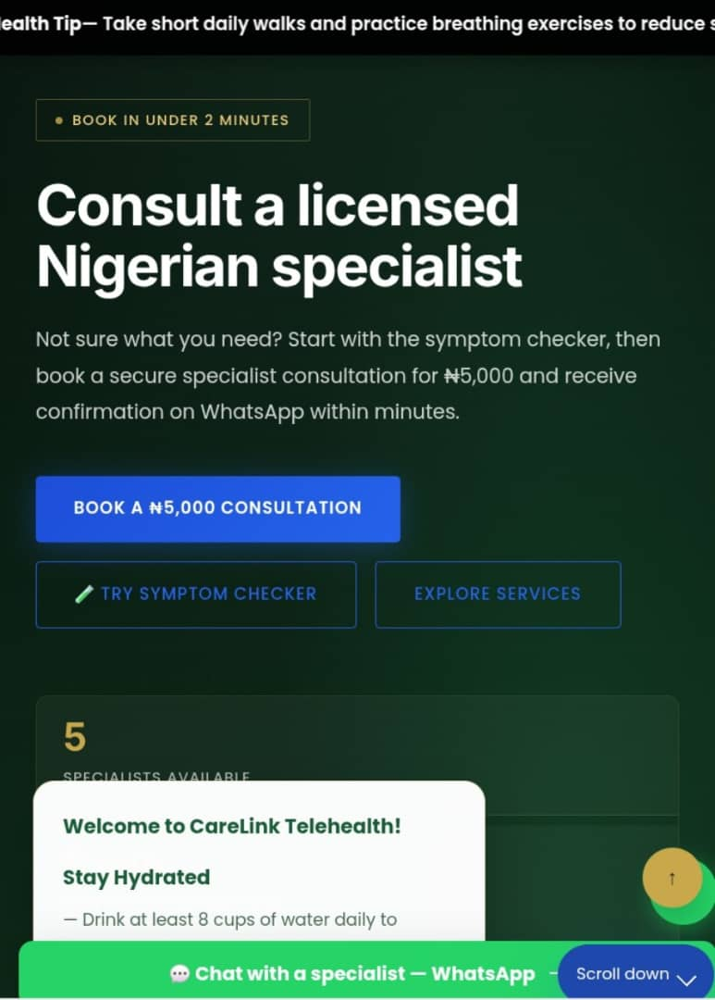
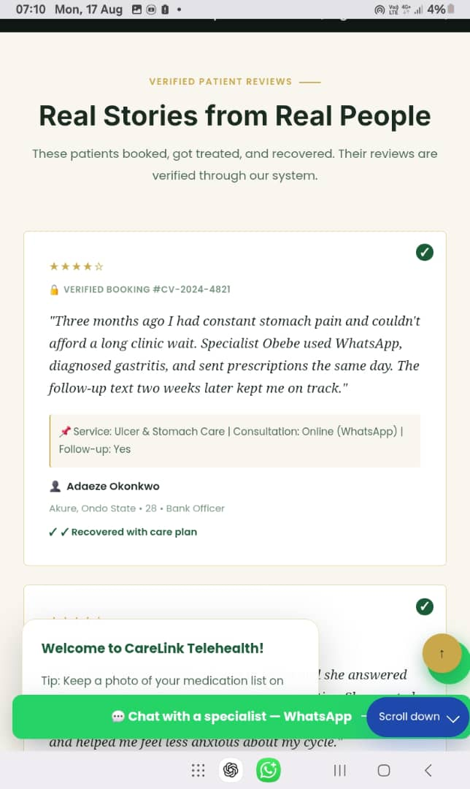
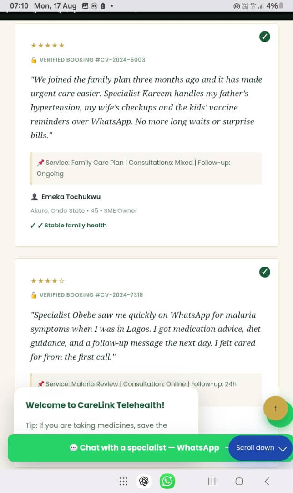

Case Study
Building a digital healthcare experience around the patient.
CareLink Telehealth is a digital healthcare platform designed to make it easier for patients to discover healthcare services, connect with licensed specialists, book consultations, make secure payments, and continue receiving support beyond the initial consultation.

A healthcare product built around a clear journey.
CareLink Telehealth was developed around a simple idea: make the journey from health concern to appropriate care easier to understand and easier to complete.
The product brings together service discovery, symptom guidance, specialist selection, appointment booking, payment, WhatsApp confirmation and follow-up-oriented care into one connected experience.
The challenge
Healthcare journeys can become fragmented. A person may know that something is wrong without knowing which service or specialist they need. They may also have to search for providers, ask questions through different channels, arrange appointments, make payments and keep track of what happens next.
The challenge was to create a simpler digital path from concern to care while keeping the experience familiar and accessible to Nigerian users.
One clear path from concern to care.
The product was structured around a guided journey that removes unnecessary friction.
A structured catalogue of 24 healthcare services helps users understand the types of concerns CareLink supports.
A guided symptom-selection experience helps users move toward an appropriate service before booking.
Specialist profiles provide information about available practitioners, their areas of care and real-time availability.
The booking flow collects required information and supports both online and in-person consultation options.
The booking journey includes Paystack payment integration for fast, secure transactions.
WhatsApp is used as an important communication channel for confirmation, reminders and ongoing support.
Users can generate and share personal referral links to earn rewards for every successful booking.
A dedicated portal where patients track appointments, store medical records and access specialist information.
Specialist-written health education articles covering common concerns, prevention and seasonal health guidance.
From concern to care.
Choose a service, symptom or specialist and start the booking process.
Provide required information and complete payment securely through Paystack.
Appointment reminders and preparation information sent via WhatsApp within minutes.
Patients can access online consultation via WhatsApp video/call or choose in-person care.
Receive diagnosis, prescriptions and clear next-step guidance from the specialist.
Specialists check in within 48 hours and provide ongoing support as part of the care journey.
The product in use.
Real screenshots from CareLink Telehealth show how the product brings healthcare services, specialist information and appointment booking together into one seamless experience.


Key features explained.
Symptom Checker
Not every visitor knows which healthcare service to choose. The symptom checker creates a guided starting point by allowing users to select symptoms and move toward a recommended service before continuing to booking.
This reduces decision paralysis and helps users find the right specialist faster.
Booking and Payment
The booking experience was designed to reduce unnecessary steps. Users can choose a specialist, service, plan and consultation type in a logical sequence before proceeding through secure payment and confirmation.
Integration with Paystack ensures fast, secure transactions. Confirmation arrives immediately on WhatsApp, creating a seamless handoff from booking to appointment.
WhatsApp Communication
WhatsApp plays a central role in the CareLink experience, particularly around confirmation, reminders and ongoing support.
When a patient books a consultation, they receive confirmation and appointment details on WhatsApp within 5 minutes. Reminders are sent 24 hours and 1 hour before the appointment. After the consultation, specialists send follow-up messages and support through WhatsApp—the channel patients already use every day.
Built with a practical technology stack.
CareLink Telehealth was built using proven, production-ready technologies that prioritize reliability, security and user experience.
Product structure and semantic markup.
Responsive visual system and interface styling.
Interactive product behavior and user flows.
Backend services and data management.
Version control and project collaboration.
Deployment, hosting and continuous integration.
Secure payment processing and transactions.
Patient communication and booking confirmation.
From idea to working product.
Our approach combined understanding the healthcare problem with building a product that fit how people actually use technology.
Identify the healthcare problem and define the intended patient journey from concern to care.
Turn the journey into clear product sections, services, booking flows and user actions.
Develop the interface, interactive components and supporting backend functionality.
Integrate services required for payments, communication and data handling securely.
Test the product, identify friction points and continue improving based on real-world use.
What made the product interesting to build.
Healthcare involves multiple steps, providers and decisions. The product needed to make that complexity understandable without overwhelming the user or removing necessary information.
The platform needed to support digital interactions seamlessly while keeping communication with healthcare professionals central to the experience—not secondary to it.
The experience was designed around Nigerian users, including WhatsApp communication, local payment methods and online/in-person care options that fit how healthcare is accessed locally.
The result
CareLink Telehealth evolved into a live healthcare technology product that brings service discovery, symptom guidance, specialist selection, booking, payment, communication and ongoing care into a connected digital experience.
The product continues to evolve as CareLink learns from real-world use and develops its healthcare ecosystem. Currently, the platform supports 24 health services, 5 licensed specialists, and has helped over 190 patients access healthcare faster.
What we learned building it.
See CareLink Telehealth in action.
The best way to understand the product is to experience it. Visit CareLink Telehealth and explore how the platform brings healthcare services, specialist selection and appointment booking together.
More CareLink work
Explore other products and projects built by CareLink.
Education Technology
AlliedExam
CBT and learning platform for healthcare students. Adaptive practice tests, progress tracking and personalized learning paths for exam preparation.
View Project →CONCEPT PREVIEW
Business Website
Premium Car Wash
Modern business website focused on services and customer enquiries. Online booking, service showcases and customer testimonials integrated with contact capabilities.
View Project →